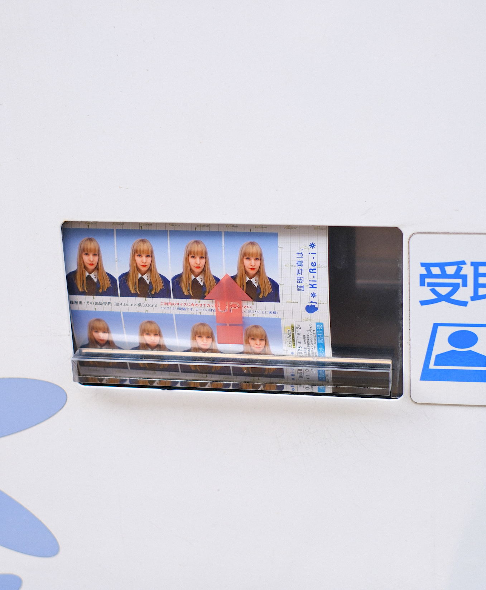
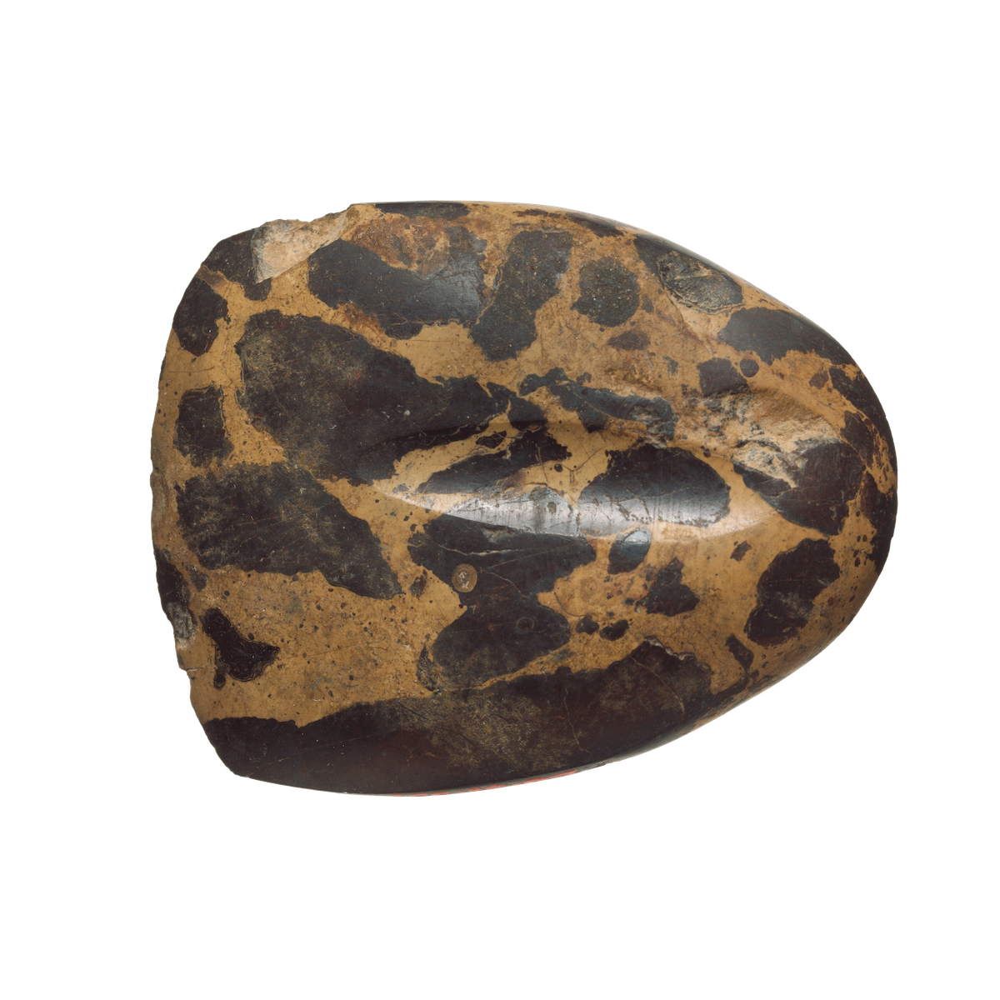

Hello, I'm Ida Skovmand. I write and take photos, mostly.
My writing about art and culture has appeared in publications such as Sydsvenskan, Lindsay Magazine, Tablet Magazine, The Skirt Chronicles, DANS, BON, SVD and I Love You Magazine. In recent years, my visual work has taken up a bigger chunk of my time, including shooting the pictures for a French cookbook.
Dama is a café and bakery that I co-founded in 2022 and was the creative director of. Now, as debillie, my partner Aviv and I do big and small mixed media projects around food: events, zines, f&b concepts and art direction. One day when the stars align, we'll do another café.
I was born on the coast in the south of Sweden, to Danish and Norwegian parents. After living in Paris, Jaffa, Malmö, alongside one year-stints in Copenhagen and London, I’m currently based in Vienna.
Email me? idaskovmand (a) gmail.com
